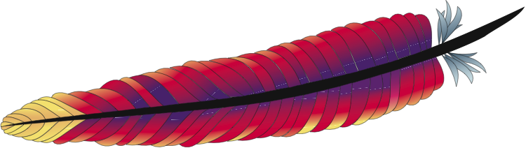
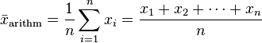
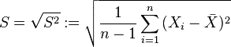

Dokumentation
Stand:Überblick
- Technische Architektur
- enviroCar
- Benutzeroberfläche der Applikation
- Selektionswerkzeuge
- Filtereinstellungen
- Analysefunktionen
- Diagramme
- Interpolationen
- Extern hervorgerufene Limitierungen und Probleme
- Quellen
1. Technische Architektur
Im Folgenden werden alle Programmier- und Markupsprachen, sowie eingeladene Frameworks gezeigt, die in diesem Projekt benutzt wurden. Viele der Technologien sind Open Source Software, bzw. dürfen in nicht kommerziellen Projekten kostenlos benutzt werden. Alle Internetseiten des Projekts basieren auf den derzeitigen Webstandards.1.1 Der Server
- Ubuntu Server 12.04 LTS hrogehoirenrgjrehgkjbe rökghargakb fj aekfgraekb gkjrbvhrköa glrbhkbvarl bg hkaga
-  Apache HTTP Server (Version: 2.4) hrogehoirenrgjreh
- ProFTPD (Version: 1.3.4d) hrogehoirenrgjrehgkjbe rökghargakb fj aekfgraekb gkjrbvhrköa glrbhkbvarl bg hkaga
1.2 Das Portal
-
 HTML5
HTML5
- CSS3
- JavaScript (wird im Framework Shadowbox benutzt)
1.3 Die Applikation
-
HTML5
- CSS3
- JavaScript (sämtliche Funktionen der Applikation wurden mit JavaScript umgesetzt; desweiteren verwenden alle aufgelisteten Frameworks JavaScript)
1.4 Benutzte Frameworks
-
 Leaflet wurde als Kartenframework benutzt. Es besitzt bereits die Möglichkeit des Rein- und Rauszoomen eines Kartenausschnitts. Des weiteren bietet es die Möglichkeit unterschiedliche Layer einzuladen, wie z.B. Kartenmaterial. Die Navigationselemente, sowie die Funktion sich orten zu lassen wurden selbst implementiert. Alle Funktionen, sowie das Framework sind in JavaScript umgesetzt.
Leaflet wurde als Kartenframework benutzt. Es besitzt bereits die Möglichkeit des Rein- und Rauszoomen eines Kartenausschnitts. Des weiteren bietet es die Möglichkeit unterschiedliche Layer einzuladen, wie z.B. Kartenmaterial. Die Navigationselemente, sowie die Funktion sich orten zu lassen wurden selbst implementiert. Alle Funktionen, sowie das Framework sind in JavaScript umgesetzt.
- Highcharts JS wurde benutzt, um dem Nutzer eine Diagrammdarstellung der ausgewählten Punkte zu bieten. Das Framework ist in JavaScript geschrieben.
- JQuery wurde bentuzt um einfacher Funktionen in JavaScript zu schreiben. Desweiteren wurde es benutzt um JQuery UI Elemente zu benutzten. Das Framework ist in JavaScript geschrieben.
- JQuery User Interface wurde bentuzt, um Popups, wie bei der Trackauswahl zu zeigen. Desweiteren bietet es die Möglichkeit einer Kalenderansicht, sowie es in den Filteroptionen mit Startdatum und Enddatum eingesetzt wurde. Das Framework ist in JavaScript geschrieben.
-
 Shadowbox.js ermöglicht die Bilder, bzw. Screenshots in der Benutzerhilfe und der Dokumentation zunächst als Thumbnails zu zeigen und anschließend bei einem Klick vergrößert darzustellen. Das Framework ist in JavaScript geschrieben.
Shadowbox.js ermöglicht die Bilder, bzw. Screenshots in der Benutzerhilfe und der Dokumentation zunächst als Thumbnails zu zeigen und anschließend bei einem Klick vergrößert darzustellen. Das Framework ist in JavaScript geschrieben.
2. enviroCar
Um die Performance unserer Applikation zu optimieren, laden wir von enviroCar immer nur die Messpunkte, die im aktuellen Raumausschnitt auf der Karte auch dargestellt werden können. Die Anzahl der einzelnen Anfragen wird dadurch gesteigert, weil für jede Karteninteraktion eine erneute Anfrage gesendet wird. Tests haben allerdings ergeben, dass größere Abfragen mit mehreren tausend Punkten erheblich länger benötigen. Die Performance ließe sich noch weiter verbessern, wenn enviroCar mehr Messpunkte mit einer Abfrage liefern würde (siehe auch 8.1). Als Kompromiss haben wir uns daher entschieden, dem User die Auswahl zu überlassen, wieviel Punkte er gleichzeitig angezeigt bekommen möchte. Dieser Ansatz ist auch insoweit sinnvoll, da jeder Benutzer auch andere Hardwarebedingungen mit sich bringt und auch die Internetverbindungen von Benutzer zu Benutzer sehr unterschiedlich sind.2.1 API
Der enviroCar-Server bietet eine RESTful-Schnittstelle, um Messdaten und Anderes abfragen zu können. Die API erlaubt es beispielsweise über eine BoundingBox wie oben beschrieben, alle enthaltenen Messpunkte zu erfragen. Zusätzlich benutzen wir die track-Resources um einzelne Fahrten zu visualisieren und der Selektion hinzuzufügen. Die Applikation fordert Messpunkte in unterschiedlichen Situationen an:2.2 Abfrage von Messpunkten
Beim initialen Start der Applikation ist die Karte auf die Koordinaten 51.96 n.B., 7.62 ö.L. zentriert. Um den daraus entstehenden Bildschirmausschnitt wird eine Bounding Box gespannt und die dazugehörigen Koordinaten werden dem enviroCar-Server übergeben. Der Server liefert die Punkte als ein Array von JSON-files zurück. Diese files enthalten Messdaten sowie geographische Koordinaten. Die Applikation extrahiert aus den JSON-files letztere und übergibt jedes Koordinatenpaar an die Karte. Auf dieser werden die Punkte dann dargestellt. Gleichzeitig kann die Applikation jedem Punkt die Messdaten zuordnen.2.3 Karteninteraktionen
Es gibt Karteninteraktionen, welche eine Änderung des Bildschirmausschnitts zur Folge haben. Das betrifft das Zoomen sowie das Verschieben (“pannen”), somit auch die LocateMe-Funktion. Nach jeder solcher Änderung des Bildschirmausschnitts wird eine Anfrage an den enviroCar-Server gestellt. Diese Anfrage beinhaltet die Bounding Box des neuen Bildschirmausschnitts. Der Server liefert Messpunkte für diese Box zurück. Die alten Messpunkte werden von der Karte entfernt und die neuen Punkte werden auf der Karte visualisiert.2.4 Ermittlung des zugehörigen Tracks für einen Messpunkt
Leider ermöglicht es enviroCar nicht, von einem Messpunkt aus direkt auf den zugehörigen Track zu schließen. Das Attribut “track-id” wird bei Messpunkt-Anfragen nicht mitgeliefert (siehe auch 8.4). Unsere Applikation bietet daher folgende Lösung. Wird der Track zu einem auf der Karte liegenden Messpunkt angefragt so bestimmt die Applikation den aktuellen Raumausschnitt und sendet eine Anfrage an enviroCar. Anschließend werden alle in diesem Raumausschnitt liegenden Punkte zurückgegeben. Diese wiederum werden dann nach dem gewählten Messpunkt durchsucht. Ist dieser gefunden, kann eindeutig bestimmt werden, zu welchem Track der Punkt gehört. Dieser Ansatz hat leider einem enorm hohen Aufwand, vor allem bei großen Raumausschnitten. Deshalb wird bei dieser Funktion zuerst der Ausschnitt der Karte auf den bestimmten Punkt zentriert, um soviele Tracks wie möglich auszuschließen und die Auswahl gering zu halten.3. Benutzeroberfläche der Applikation
4. Selektionswerkzeuge
4.1 Auswahl eines einzelnen Punktes
Über dieses Auswahlwerkzeug lassen sich einzelne Punkte von der Karte der Auswahl hinzufügen. Der Benutzer klickt einfach auf den gewünschten Messpunkt und erhält eine kurze Bestätigung in Form einer sich selbst schließenden Infobox. Außerdem wird der Messpunkt blau eingefärbt, nachdem er ausgewählt wurde. Dieses Auswahlwerkzeug ist das einzige, dass auch das Entfernen von Messpunkten aus der Auswahl erlaubt. Dazu klickt der Nutzer einfach erneut auf einen bereits ausgewählten Punkt.4.2 Auswahl eines einzelnen Tracks
Über dieses Auswahlwerkzeug lassen sich ganze Track über eine Track-ID der Auswahl hinzufügen. Der Benutzer gibt einfach die gewünschte Track-ID in das Textfeld ein und bestätigt seine Eingabe mit einem Klick auf den OK-Button. Anschließend wird der Kartenausschnitt auf den kompletten Track zentriert und alle Punkte des Tracks zur Auswahl hinzugefügt. Die Punkte sind anschließend blau markiert. Beim bestätigen wird eine Anfrage zum enviroCar-Server gesendet, die alle Messpunkte zu dieser Track-ID erfragt. Anschließend werden die erhaltene Messpunkte in einer Schleife der Auswahl hinzugefügt. Dabei werden Punkte, die sich bereits in der Auswahl befinden, nicht erneut hinzugefügt und der Benutzer bekommt eine entsprechende Hinweismeldung.4.3 Auswahl von Messpunkten über ein Polygon
Über dieses Auswahlwerkzeug lassen sich verschiedene Messpunkte von der Karte zur Auswahl hinzufügen, indem ein Polygon gezeichnet wird. Nach der Auswahl des Werkzeuges kann der Nutzer mit einfachen Klicks in der Kart ein beliebig großes Polygon zeichnen. Mit dem Klick auf den Startpunkt wird das Polygon geschlossen. Nicht geschlossene Polygone können nicht bestätigt werden. Das Zeichentool kann jederzeit mit einem Klick auf den “Reset” Button beendet werden.Wurde ein Polygon bestätigt, so wird der Kartenausschnitt zuerst auf das gezeichnete Polygon zentriert, bevor der Algorithmus gestartet wird. Der Grund dafür ist, dass für den Algorithmus alle Punkte aus dem aktuellen Kartenausschnitt miteinbezogen werden. Durch das Zentrieren werden nicht relevante Punkte ausgelassen und der Algorithmus beschleunigt (Es werden weniger Punkte iteriert und die Performance steigt).
Werden bei der Polygonauswahl Messpunkte ausgewählt, die bereits in der Auswahl sind, so werden diese nicht erneut hinzugefügt und der Benutzer bekommen eine entsprechende Hinweismeldung.
5. Filtereinstellungen
Über eine Filterleiste im Kopfbereich der Applikation kann der Nutzer die Messpunkte nach Datum, SensorID und Fahrzeugtyp filtern, so dass ihm nur noch eine Auswahl der Messpunkte (die passenden Messpunkte) angezeigt wird.Hierbei ist zu beachten, dass es nur möglich ist, das Enddatum an den gleichen Tag, bzw. einen späteren Tag als das Anfangsdatum einzustellen. Auch das Anfangsdatum kann nur am gleichen, bzw. an einem früheren Tag als das Enddatum eingestellt werden.
Der Nutzer kann über ein Drop-Down-Menü nach einem bestimmten Fahzeugtyp filtern. Die gegebene Auswahl ist allerdings nicht vollständig und befindet sich immer auf dem Stand vom 31.1.2014.
Die Filterung der Messpunkte nach einem bestimmte Track findet im Bereich Selektionswerkzeuge statt. Dort hat der Nutzer die Möglichkeit, eine TrackID einzugeben und eine Filterung durchzuführen.
6. Analysefunktionen
Für die Berechnung der Analysefunktionen müssen mindestens 2 Messpunkte selektiert worden sein.6.1 Berechnung des Mittelwertes
 Das arithmetische Mittel wird für die selektierten Punkte angezeigt.Messpunkte die keinen Wert für das zu berechnende Attribut haben werden nicht berücksichtigt. Außerdem enthalten einige Messpunkte für ein Attribut durchgehend den Wert “0”. Wahrscheinlich wurde dieser Wert nicht gemessen und per default “0” eingetragen. Dadurch kann das Ergebnis der Analyse verfälscht werden.[1]
5.2 Berechnung der Standardabweichung
 Die emprirische Standardabweichung wird für die selektierten Punkte angezeigt.Messpunkte die keinen Wert für das zu berechnende Attribut haben werden nicht berücksichtigt. Außerdem enthalten einige Messpunkte für ein Attribut durchgehend den Wert “0”. Wahrscheinlich wurde dieser Wert nicht gemessen und per default “0” eingetragen. Dadurch kann das Ergebnis der Analyse verfälscht werden.[2]
6.3 Berechnung des Maximums
Der niedrigste Wert der selektierten Punkte wird angezeigt.Messpunkte die keinen Wert für das zu berechnende Attribut haben werden nicht berücksichtigt. Außerdem enthalten einige Messpunkte für ein Attribut durchgehend den Wert “0”. Wahrscheinlich wurde dieser Wert nicht gemessen und per default “0” eingetragen. Dadurch kann das Ergebnis der Analyse verfälscht werden.
6.4 Berechnung des Minumums
Der höchste Wert der selektierten Punkte wird angezeigt.Messpunkte die keinen Wert für das zu berechnende Attribut haben werden nicht berücksichtigt. Außerdem enthalten einige Messpunkte für ein Attribut durchgehend den Wert “0”. Wahrscheinlich wurde dieser Wert nicht gemessen und per default “0” eingetragen. Dadurch kann das Ergebnis der Analyse verfälscht werden.
6.5 Berechnung des häufigsten Fahrzeugtyps
7. Diagramme
7.1 Berechnung der Geschwindigkeit
7.2 Berechnung des CO2-Ausstoßes
7.3 Berechnung des Spritverbrauchs
7.4 Berechnung der MAF-Werte
7.5 Berechnung der häufigsten Fahrzeugtypen
8. Interpolationen
8.1 Interpolation mit inverser Distanzgewichtung
Die Inverse Distanzwichtung ist ein nicht-statistisches Interpolationsverfahren der Geostatistik und wird zur einfachen Interpolation der räumlichen Abhängigkeit georeferenzierter Daten genutzt. Dabei gilt als Grundannahme, dass die Ähnlichkeit eines unbekannten Wertes zum bekannten Messwert mit der Entfernung von diesem abnimmt, die Daten also umso unähnlicher sind, je weiter sie auseinander liegen. Dieser Zusammenhang wird bei der inversen Distanzwichtung dadurch zum Ausdruck gebracht, dass der Messwert mit einem Gewicht multipliziert wird, das proportional zum Inversen des Abstands zwischen Schätzpunkt und Messort ist.In unserer Applikation berechnen wir zuerst die Koordinaten für die neuen interpolierten Messwerte. Es handelt sich dabei um genau n - 1 interpolierte Werte (n = Anazahl der gegebenen Messwerte). Diese werden entlang des Tracks immer zwischen zwei vorhanden Messpunkten aus der enviroCar-Datenbank positioniert. Anschließend werden die interpolierten Attribute für jeden Punkt berechnet.
Der Schätzer z*(x0) berechnet sich wie oben beschrieben aus der Summe(n = Anzahl) der vorhandenen Messwerte(z(xi)) gewichtet nach der Entfernung vom Messpunkt(xi) (euklidische Distanz) zum interpolierten Wert. Es wäre auch möglich und evtl. sinnvoller gewesen, die Distanz entlang des Tracks zu berechnen. Allerdings wäre dann eine weitere Summe in der Formel und die Performance der Interpolation würde sich verschlechtern.
8.2 Interpolation mit Kriging
Der wesentliche Vorteil gegenüber einfacheren Methoden wie beispielsweise der Inversen Distanzgewichtung ist die Berücksichtigung der räumlichen Varianz, die sich mit Hilfe der Semivariogramme ermitteln lässt. Für einen gesuchten Wert werden dabei die Gewichte der in die Berechnung einfließenden Messwerte so bestimmt, dass die Schätzfehlervarianz möglichst gering ist. Der Fehler hängt dabei von der Qualität des Variogramms bzw. der Variogrammfunktion ab.In unserer Applikation haben wir für die Interpolation mit Kriging auf ein vorhandenes Framework zugegriffen[3]. Dieses speziell für JavaScript entwickelte Tool ermöglicht dem Benutzer die Parameter für Sigma2, Alpha und das Modell selbst auszuwählen. Die Bedeutung der Parameter ist auf der Hilfe-Seite des verwendeten Frameworks ausführlich dokumentiert.
9. Extern hervorgerufene Limitierungen und Probleme
10. Quellen
10.1 Quellenverzeichnis
[1] Wikipedia (2014): Mittelwert (online unter: http://de.wikipedia.org/wiki/Mittelwert, aufgerufen am 19.02.2014)[2] Wikipedia (2014): Standardabweichung (online unter: http://de.wikipedia.org/wiki/Standardabweichung, aufgerufen am 19.02.2014)
[3] Omar Olmedo (2013 ): kriging.js (online unter: https://github.com/oeo4b/kriging.js, aufgerufen am 08.03.2014)
[4]
10.2 Kartenmatierial
-
Layer 1: Schmatische Karte, die auf freien OpenStreetMap-Daten basiert.
(eingebunden am 08.03.2014) -
Layer 2: Schmatische Karte, die auf freien OpenStreetMap-Daten basiert und von dem Kartendienst Cloudmade aufbereitet wurden. Der benutze Style heißt: "Fresh".
(eingebunden am 08.03.2014) -
Layer 3: Topographische Karte, bereitgestellt von OpenTopoMap, die ebenfalls auf OpenStreetMap Daten basieren.
(eingebunden am 08.03.2014) -
Layer 4: Topographische Karte für NRW. Dieses Kartenmaterial ist ein WMS-Layer mit dem Namen "WMS NW DTK10" und stammt von dem Geoportal NRW. Das Kartenmaterial ist nur in einem bestimmten Zoomlevel (Maßstab 1:10.000) verfügbar und in Farbe.
(eingebunden am 08.03.2014) -
Layer 5: Topographische Karte für NRW. Dieses Kartenmaterial ist ein WMS-Layer mit dem Namen "WMS NW DTK10" und stammt von dem Geoportal NRW. Das Kartenmaterial ist nur in einem bestimmten Zoomlevel (Maßstab 1:10.000) verfügbar und in schwarz-weiß(panchromatisch).
(eingebunden am 08.03.2014) - Layer 6: Satelliten und Luftbilddaten von, die in der API von Google Maps bereit gestellt werden.
(eingebunden am 08.03.2014)